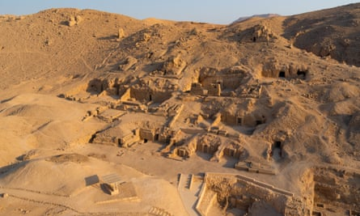
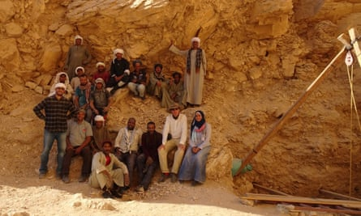
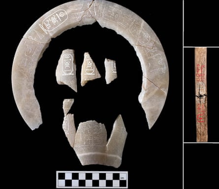

To uncover the location of one long-lost pharaoh’s tomb is a career-defining moment for an archaeologist. But to find a second is the stuff of dreams.
Last week British archaeologist Piers Litherland announced the find of the century – the first discovery of a rock-cut pharaoh’s tomb in Egypt since Tutankhamun’s in 1922 .
His team found the pharaoh Thutmose II’s tomb underneath a waterfall in the Theban mountains in Luxor, about 3km west of the Valley of the Kings. It contained almost nothing but debris, and the team believe it was flooded and emptied within six years of the pharaoh’s death in 1479BC.
Now Litherland has told the Observer he believes he has identified the location of a second tomb belonging to Thutmose II. And this one, he suspects, will contain the young pharaoh’s mummified body and grave goods.
Archeologists believe this second tomb has been hiding in plain sight for 3,500 years, secretly buried beneath 23 metres of limestone flakes, rubble, ash and mud plaster and made to look like part of the mountain.
“There are 23 metres of a pile of man-made layers sitting above a point in the landscape where we believe – and we have other confirmatory evidence – there is a monument concealed beneath,” he said. “The best candidate for what is hidden underneath this enormously expensive, in terms of effort, pile is the second tomb of Thutmose II.”
While searching close to the first tomb for clues about where its contents were taken after the flood, Litherland found a posthumous inscription buried in a pit with a cow sacrifice. This inscription indicates the contents may have been moved by the king’s wife and half-sister Hatshepsut – one of Egypt’s greatest pharaohs and one of the few women to rule in her own right – to an as-yet undiscovered second tomb nearby.
The Valley of the Kings in Luxor, Egypt, near where Thutmose II’s tomb was found.Photograph: Image by Ramesh Thadani/Getty Images
Last week the New Kingdom Research Foundation, a British independent academic body, and the Egyptian Ministry of Tourism and Antiquities revealed that a project led by Litherland had found the first tomb in 2022, after more than a decade of work.
For about a year, he and his team of Egyptian archaeologists – “discoveries like this are not made by individuals”, he says – have been investigating ways to get access to the second tomb by excavating the 3,500-year-old human-made layers of rock and plaster that surround it.
At the top of layers of thick limestone plaster, limestone flakes “the size of a dining room table”, tufa (a flaky limestone which forms a cement) and rubble, is a layer of mud plaster with ash on top, Litherland said. “Among that ash, we found the remains of beer jars and chisel ends used by workmen who made tombs. So there’s no doubt these layers are man-made.”
At that point, any tomb underneath the layers would have been well covered. But a further step was taken “and that is what is slowing everything down” on the dig, said Litherland. The ancient Egyptians then “levered away large portions of the cliff and made them come crashing down on top”. These large rocks – some of which are the size of a car – were then “cemented in place using limestone plaster”.
Now Litherland’s team is trying to detach those rocks and the limestone plaster by hand: “We’ve tried to tunnel into it, we’ve tried to shave away the sides, but there are overhanging rocks, so it’s too dangerous,” Litherland said.
He, his foreman, Mohamed Sayed Ahmed, and his archeological director, Mohsen Kamel, took the difficult decision to remove the entire structure – which stands out from the cliff – three weeks ago, and are about halfway there. “We should be able to take the whole thing down in about another month,” Litherland said.
Piers Litherland, front right, with his team: Mohsen Kamel, Rabee Eissa, Mohamed Abd el-Baset, Hanan Mahmoud, Sherif Abd el-Monneim, Nermeen Aba Yazeed, Amel Elweida, Ahmed Hassan, Judith Bunbury, Andreas Dorn, Kelly Accetta-Crowe, Caroline Sims, Aude Gräzer, and Bryony Smerdon, Mohamed Sayed Ahmed, Ashraf Omar, Heraji Said Mohamed, Shahat Mohamed el-Azab, Kairi Taher, Ahmed Abd el-Ahty, Ahmed el-TairyPhotograph: The New Kingdom Research Foundation
He speculates that both tombs were constructed by the 18th dynasty architect Ineni, who wrote in his biography that he had “excavated the high tomb of His Majesty, no one seeing, no one hearing”, and was facing “a very serious problem” after the first tomb flooded. “If [Ineni] was being regarded as a failure for not delivering what he was supposed to deliver – a secure resting place for a king who, on his death, became a god – he may have been in a bit of a panic, trying to make sure that whatever happened this time, the tomb was not going to be flooded.”
All kings from the 18th dynasty were buried under waterfalls. By covering the tomb with layers of plaster and limestone flakes, Ineni protected it from water while simultaneously sealing and concealing the site from robbers. “Ineni says in his biographies that he did a lot of clever things to hide the locations of tombs, including covering the tombs with layers of mud plaster, which he says has never been done before. This has not been remarked on ever, to my knowledge.”
It is a strategy that appears to have worked. While grave goods from the ransacked tombs of pharaohs from the 18th, 19th and 20th dynasties are commonplace in museums, “there are no burial goods of any sort relating to the burial of Thutmose II in any museum or private collection”, Litherland said.
The body of a 30-year-old, found in 1881 in Deir el-Bahari and previously identified as Thutmose II, is too old to belong to the pharaoh, Litherland said. “He is described in Ineni’s biography as coming to the throne ‘the falcon in the nest’ – so he was a young boy.” Some Egyptologists believe he reigned for just three to four years and died shortly after fathering Thutmose III.
For Litherland, who became fascinated with ancient Egypt as a young boy, the thought of finding Thutmose II’s final resting place is breathtaking. “You dream about such things. But like winning the lottery, you never believe it will happen to you.”
Artefacts found during excavations that discovered the tomb of Thutmose II.Photograph: Egyptian Ministry of Antiquities/AFP/Getty Images